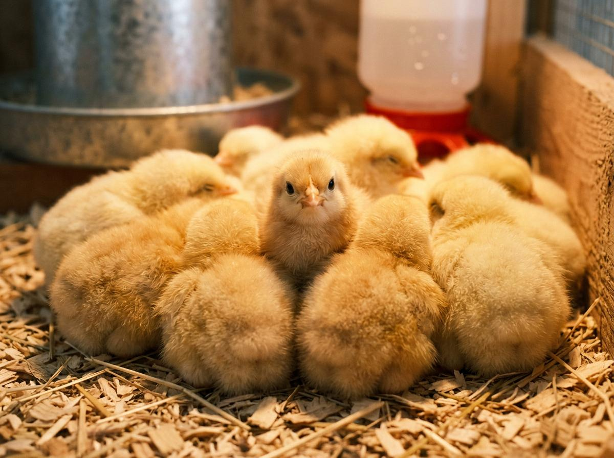

Choosing Breeds
Kuroiler vs Broiler vs Layers: Which Chicken Is Right for Your Uganda Farm?
July 29, 2026
An educational comparison of costs, feeding and timelines. Unified Farm BLM currently raises local chickens, not all the breeds discussed.
Read More →